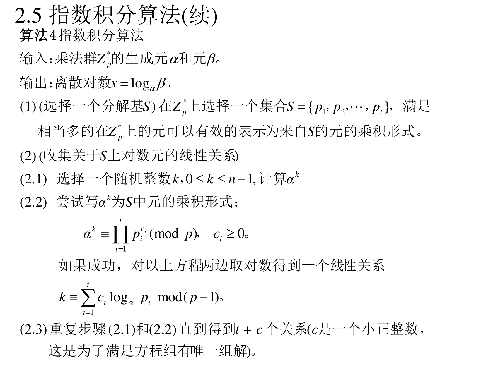
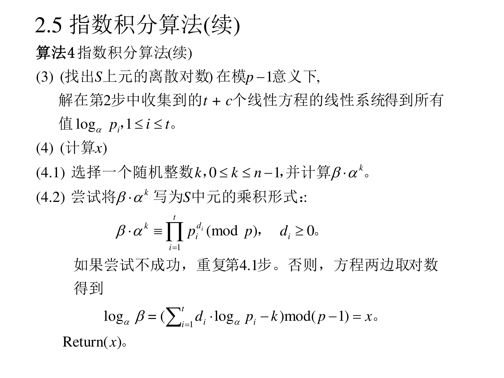
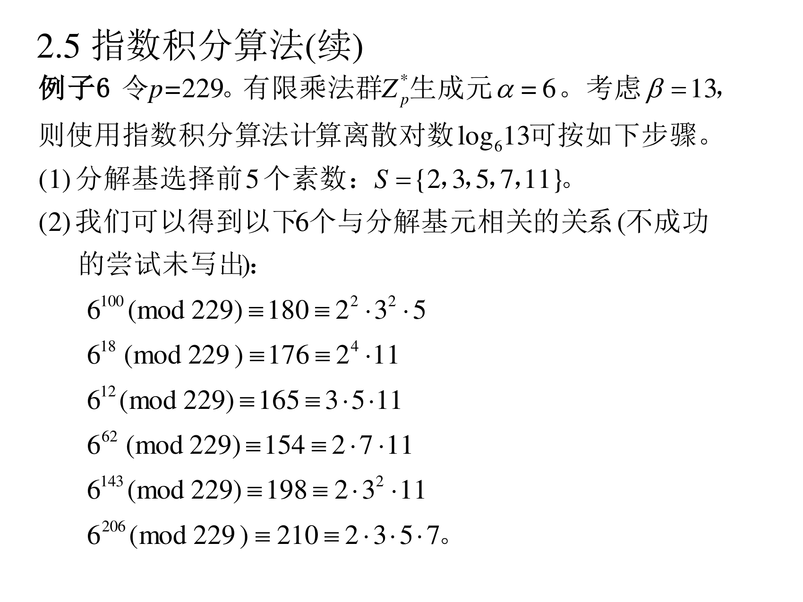
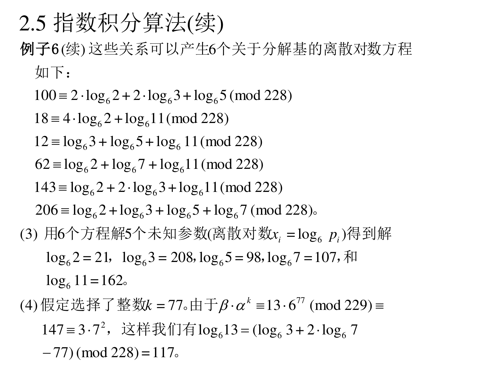

本页目录
6.2.5 指数积分算法
前四种算法的复杂度都是 p \sqrt{p} p 目前已知最有力的计算离散对数方法 ，代价是它只能用在特定群里 （Z p ∗ \mathbb{Z}_p^{*} Z p ∗ 亚指数时间 。
6.2.5.1 思想
（PPT 第 23 页）
指数积分算法是目前已知最有力的计算离散对数方法。这项技术并不能应用于所有群，但是，一旦可以使用，算法为亚指数时间复杂度 。指数积分算法可以应用于有限乘法群 Z p ∗ \mathbb{Z}_p^{*} Z p ∗ Z p ∗ \mathbb{Z}_p^{*} Z p ∗ S S S 分解基 。这种方法中，Z p ∗ \mathbb{Z}_p^{*} Z p ∗ S S S
翻译成人话 ：它借用了第五讲里"二次筛法/数域筛法分解大整数 "的套路——
先选一小撮小素数当"字母表 "（分解基 S S S
然后大量随机取 k k k α k m o d p \alpha^k \bmod p α k mod p 刚好能只用字母表里的素数乘出来 （这叫"平滑 "）。每成功一次，就对两边取离散对数，得到一条关于"字母表里每个素数自己的离散对数"的线性方程 ；
收够方程，解线性方程组 ，就拿到了字母表里每个小素数的离散对数；
最后要使的目标 β \beta β
为什么它快 ：因为"随机整数是平滑的"这件事有一个亚指数的概率，而不是 p \sqrt{p} p
6.2.5.2 算法 4
（PPT 第 24–25 页）


算法 4（指数积分算法）
输入 ：乘法群 Z p ∗ \mathbb{Z}_p^{*} Z p ∗ α \alpha α β \beta β 输出 ：离散对数 x = log α β x=\log_{\alpha}\beta x = log α β (1) （选择一个分解基 S S S Z p ∗ \mathbb{Z}_p^{*} Z p ∗ S = { p 1 , p 2 , … , p t } S=\{p_1,p_2,\dots,p_t\} S = { p 1 , p 2 , … , p t } Z p ∗ \mathbb{Z}_p^{*} Z p ∗ S S S (2) （收集关于 S S S (2.1) 选择一个随机整数 k k k 0 ≤ k < n 0\le k<n 0 ≤ k < n α k \alpha^{k} α k (2.2) 尝试写 α k \alpha^{k} α k S S S α k ≡ ∏ i = 1 t p i c i ( m o d p ) \alpha^{k}\equiv\prod_{i=1}^{t}p_i^{c_i}\pmod p α k ≡ ∏ i = 1 t p i c i ( mod p ) c i ≥ 0 c_i\ge0 c i ≥ 0
k ≡ ∑ i = 1 t c i log α p i m o d ( p − 1 ) k\equiv\sum_{i=1}^{t}c_i\log_{\alpha}p_i\bmod (p-1) k ≡ i = 1 ∑ t c i log α p i mod ( p − 1 ) (2.3) 重复步骤 (2.1) 和 (2.2) 直到得到 t + c t+c t + c c c c (3) （找出 S S S p − 1 p-1 p − 1 t + c t+c t + c log α p i \log_{\alpha}p_i log α p i 1 ≤ i ≤ t 1\le i\le t 1 ≤ i ≤ t (4) （计算 x x x (4.1) 选择一个随机整数 k k k 0 ≤ k ≤ n − 1 0\le k\le n-1 0 ≤ k ≤ n − 1 β ⋅ α k \beta\cdot\alpha^{k} β ⋅ α k (4.2) 尝试将 β ⋅ α k \beta\cdot\alpha^{k} β ⋅ α k S S S β ⋅ α k ≡ ∏ i = 1 t p i d i ( m o d p ) \beta\cdot\alpha^{k}\equiv\prod_{i=1}^{t}p_i^{d_i}\pmod p β ⋅ α k ≡ ∏ i = 1 t p i d i ( mod p ) d i ≥ 0 d_i\ge0 d i ≥ 0 log α β = ( ∑ i = 1 t d i ⋅ log α p i − k ) m o d ( p − 1 ) = x \log_{\alpha}\beta=\left(\sum_{i=1}^{t}d_i\cdot\log_{\alpha}p_i-k\right)\bmod (p-1)=x log α β = ( i = 1 ∑ t d i ⋅ log α p i − k ) mod ( p − 1 ) = x ( x ) (x) ( x )
翻译成人话 （关键是第 (2.2) 和 (4.2) 的两次"取对数"）：
第 (2.2) 步：α k = p 1 c 1 p 2 c 2 ⋯ \alpha^k=p_1^{c_1}p_2^{c_2}\cdots α k = p 1 c 1 p 2 c 2 ⋯ α \alpha α k ≡ c 1 log α p 1 + c 2 log α p 2 + ⋯ k\equiv c_1\log_\alpha p_1+c_2\log_\alpha p_2+\cdots k ≡ c 1 log α p 1 + c 2 log α p 2 + ⋯ 未知数是"每个小素数 p i p_i p i ，一共 t t t t + c t+c t + c
第 (4.2) 步：把 β \beta β β α k = ∏ p i d i \beta\alpha^k=\prod p_i^{d_i} β α k = ∏ p i d i log α β + k ≡ ∑ d i log α p i \log_\alpha\beta + k\equiv\sum d_i\log_\alpha p_i log α β + k ≡ ∑ d i log α p i
为什么第 (4.1) 要"乘上 α k \alpha^k α k ：为了让左边随机化 ，这样才有机会撞上一个"平滑"的数。如果直接分解 β \beta β
6.2.5.3 评述
（PPT 第 26 页）
(1) 通常情况下，先进行计算将在集合 S S S 反复使用 。
(2) 算法 4 因为以下两个原因而未完全充分描述。第一，选择分解基 S S S (3) 对于有限乘法群 Z p ∗ \mathbb{Z}_p^{*} Z p ∗ S S S t t t
补 (1) 是这一节最重要的一句话p p p 分解基的离散对数一旦算好，全系统通用 ：攻击者攻破一个模 p p p p p p
6.2.5.4 例子 6（完整手算）
（PPT 第 27–28 页）


例子 6 ：令 p = 229 p=229 p = 229 Z p ∗ \mathbb{Z}_p^{*} Z p ∗ α = 6 \alpha=6 α = 6 β = 13 \beta=13 β = 13 log 6 13 \log_6 13 log 6 13 (1) 分解基选择前 5 个素数：S = { 2 , 3 , 5 , 7 , 11 } S=\{2,3,5,7,11\} S = { 2 , 3 , 5 , 7 , 11 } (2) 我们可以得到以下 6 个与分解基元相关的关系（不成功的尝试未写出）：
k k k 6 k m o d 229 6^{k}\bmod 229 6 k mod 229 分解
100
180
2 2 ⋅ 3 2 ⋅ 5 2^{2}\cdot3^{2}\cdot5 2 2 ⋅ 3 2 ⋅ 5
18
176
2 4 ⋅ 11 2^{4}\cdot11 2 4 ⋅ 11
12
165
3 ⋅ 5 ⋅ 11 3\cdot5\cdot11 3 ⋅ 5 ⋅ 11
62
154
2 ⋅ 7 ⋅ 11 2\cdot7\cdot11 2 ⋅ 7 ⋅ 11
143
198
2 ⋅ 3 2 ⋅ 11 2\cdot3^{2}\cdot11 2 ⋅ 3 2 ⋅ 11
206
210
2 ⋅ 3 ⋅ 5 ⋅ 7 2\cdot3\cdot5\cdot7 2 ⋅ 3 ⋅ 5 ⋅ 7
(3) 这些关系可以产生 6 个关于分解基的离散对数方程如下：
100 ≡ 2 log 6 2 + 2 log 6 3 + log 6 5 ( m o d 228 ) 100\equiv 2\log_6 2+2\log_6 3+\log_6 5 \pmod{228} 100 ≡ 2 log 6 2 + 2 log 6 3 + log 6 5 ( mod 228 ) 18 ≡ 4 log 6 2 + log 6 11 ( m o d 228 ) 18\equiv 4\log_6 2+\log_6 11 \pmod{228} 18 ≡ 4 log 6 2 + log 6 11 ( mod 228 ) 12 ≡ log 6 3 + log 6 5 + log 6 11 ( m o d 228 ) 12\equiv \log_6 3+\log_6 5+\log_6 11 \pmod{228} 12 ≡ log 6 3 + log 6 5 + log 6 11 ( mod 228 ) 62 ≡ log 6 2 + log 6 7 + log 6 11 ( m o d 228 ) 62\equiv \log_6 2+\log_6 7+\log_6 11 \pmod{228} 62 ≡ log 6 2 + log 6 7 + log 6 11 ( mod 228 ) 143 ≡ log 6 2 + 2 log 6 3 + log 6 11 ( m o d 228 ) 143\equiv \log_6 2+2\log_6 3+\log_6 11 \pmod{228} 143 ≡ log 6 2 + 2 log 6 3 + log 6 11 ( mod 228 ) 206 ≡ log 6 2 + log 6 3 + log 6 5 + log 6 7 ( m o d 228 ) 206\equiv \log_6 2+\log_6 3+\log_6 5+\log_6 7 \pmod{228} 206 ≡ log 6 2 + log 6 3 + log 6 5 + log 6 7 ( mod 228 ) x i = log 6 p i x_i=\log_6 p_i x i = log 6 p i log 6 2 = 21 , log 6 3 = 208 , log 6 5 = 98 , log 6 7 = 107 , log 6 11 = 162 \log_6 2=21,\quad \log_6 3=208,\quad \log_6 5=98,\quad \log_6 7=107,\quad \log_6 11=162 log 6 2 = 21 , log 6 3 = 208 , log 6 5 = 98 , log 6 7 = 107 , log 6 11 = 162 (4) 假定选择了整数 k = 77 k=77 k = 77 13 ⋅ 6 77 ≡ 147 ≡ 3 ⋅ 7 2 ( m o d 229 ) 13\cdot6^{77}\equiv 147\equiv3\cdot7^{2}\pmod{229} 13 ⋅ 6 77 ≡ 147 ≡ 3 ⋅ 7 2 ( mod 229 ) log 6 13 ≡ ( log 6 3 + 2 log 6 7 − 77 ) ( m o d 228 ) = 117 \log_6 13\equiv(\log_6 3+2\log_6 7-77)\pmod{228}=117 log 6 13 ≡ ( log 6 3 + 2 log 6 7 − 77 ) ( mod 228 ) = 117
手把手复现 ：
第 (2) 步：怎么"撞"出这些关系
就是随机取 k k k 6 k m o d 229 6^k\bmod 229 6 k mod 229 { 2 , 3 , 5 , 7 , 11 } \{2,3,5,7,11\} { 2 , 3 , 5 , 7 , 11 }
取 k = 100 k=100 k = 100 6 100 m o d 229 = 180 6^{100}\bmod 229=180 6 100 mod 229 = 180 180 = 2 2 ⋅ 3 2 ⋅ 5 180=2^2\cdot3^2\cdot5 180 = 2 2 ⋅ 3 2 ⋅ 5 100 ≡ 2 log 6 2 + 2 log 6 3 + log 6 5 100\equiv2\log_62+2\log_63+\log_65 100 ≡ 2 log 6 2 + 2 log 6 3 + log 6 5
取 k = 18 k=18 k = 18 6 18 m o d 229 = 176 = 2 4 ⋅ 11 6^{18}\bmod229=176=2^4\cdot11 6 18 mod 229 = 176 = 2 4 ⋅ 11
取 k = 12 k=12 k = 12 165 = 3 ⋅ 5 ⋅ 11 165=3\cdot5\cdot11 165 = 3 ⋅ 5 ⋅ 11
取 k = 62 k=62 k = 62 154 = 2 ⋅ 7 ⋅ 11 154=2\cdot7\cdot11 154 = 2 ⋅ 7 ⋅ 11
取 k = 143 k=143 k = 143 198 = 2 ⋅ 3 2 ⋅ 11 198=2\cdot3^2\cdot11 198 = 2 ⋅ 3 2 ⋅ 11
取 k = 206 k=206 k = 206 210 = 2 ⋅ 3 ⋅ 5 ⋅ 7 210=2\cdot3\cdot5\cdot7 210 = 2 ⋅ 3 ⋅ 5 ⋅ 7
（不成功的例子比如 k = 1 k=1 k = 1 6 = 2 ⋅ 3 6=2\cdot3 6 = 2 ⋅ 3 k = 2 k=2 k = 2 36 = 2 2 ⋅ 3 2 36=2^2\cdot3^2 36 = 2 2 ⋅ 3 2 收集到足够多就行 。）
第 (3) 步：解方程组
把 5 个未知数记为 a = log 6 2 , b = log 6 3 , c = log 6 5 , d = log 6 7 , e = log 6 11 a=\log_62,\ b=\log_63,\ c=\log_65,\ d=\log_67,\ e=\log_611 a = log 6 2 , b = log 6 3 , c = log 6 5 , d = log 6 7 , e = log 6 11 模 228 下解：
验算课件给的解（代入前三条方程）：
2 a + 2 b + c = 2 ( 21 ) + 2 ( 208 ) + 98 = 42 + 416 + 98 = 556 2a+2b+c=2(21)+2(208)+98=42+416+98=556 2 a + 2 b + c = 2 ( 21 ) + 2 ( 208 ) + 98 = 42 + 416 + 98 = 556 556 = 2 × 228 + 100 556=2\times228+100 556 = 2 × 228 + 100 ≡ 100 \equiv100 ≡ 100 4 a + e = 4 ( 21 ) + 162 = 84 + 162 = 246 4a+e=4(21)+162=84+162=246 4 a + e = 4 ( 21 ) + 162 = 84 + 162 = 246 246 − 228 = 18 246-228=18 246 − 228 = 18 b + c + e = 208 + 98 + 162 = 468 b+c+e=208+98+162=468 b + c + e = 208 + 98 + 162 = 468 468 = 2 × 228 + 12 468=2\times228+12 468 = 2 × 228 + 12
并且这些对数确实是对的 ：6 21 m o d 229 = 2 6^{21}\bmod229=2 6 21 mod 229 = 2 6 208 m o d 229 = 3 6^{208}\bmod229=3 6 208 mod 229 = 3 6 98 m o d 229 = 5 6^{98}\bmod229=5 6 98 mod 229 = 5 6 107 m o d 229 = 7 6^{107}\bmod229=7 6 107 mod 229 = 7 6 162 m o d 229 = 11 6^{162}\bmod229=11 6 162 mod 229 = 11
第 (4) 步：求目标
取 k = 77 k=77 k = 77 13 ⋅ 6 77 m o d 229 = 147 13\cdot6^{77}\bmod229=147 13 ⋅ 6 77 mod 229 = 147 147 = 3 ⋅ 7 2 147=3\cdot7^2 147 = 3 ⋅ 7 2
取对数：log 6 13 + 77 ≡ log 6 3 + 2 log 6 7 = 208 + 2 × 107 = 422 \log_613+77\equiv\log_63+2\log_67=208+2\times107=422 log 6 13 + 77 ≡ log 6 3 + 2 log 6 7 = 208 + 2 × 107 = 422
所以 log 6 13 ≡ 422 − 77 = 345 ≡ 345 − 228 = 117 ( m o d 228 ) \log_613\equiv422-77=345\equiv345-228=117\pmod{228} log 6 13 ≡ 422 − 77 = 345 ≡ 345 − 228 = 117 ( mod 228 )
验证 ：6 117 m o d 229 = 13 6^{117}\bmod229=13 6 117 mod 229 = 13
补 这题的关键收获p = 229 p=229 p = 229 p p p p \sqrt{p} p 这就是"p p p （见下节）。